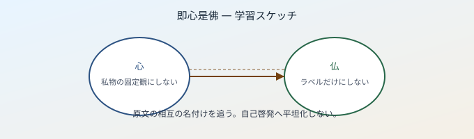

七十五巻 巻一覧
正法眼藏第五 卽心是佛
（ローカル生成の全文: 全文ページ）
なぜ優先するか（思想史・学習上の位置）
「卽心是佛」は、中国禅史でも頻出の標語ですが、道元はここで佛佛祖祖の保任としての卽心是佛と、世間流布の「直心是佛」的読みとの峻別を徹底します。さらに一心一切法・一切法一心、山河大地・牆壁瓦礫と心の道取、そして發心・修行・菩提・涅槃を卽心是佛に収める展開があり、後巻の多くの論題の軸語になります。
語彙の足場
- 保任：信じて任せ、離さず守ること。道元は「唯佛祖與佛祖のみ卽心是佛しきたり」とし、軽い自己肯定に還元しないよう戒めます。
- 一心一切法・一切法一心：心と万法の相即を表す定型句として繰り返されます。
- 不染汚：卽心是佛は「不染汚卽心是佛」とも言われ、染・不染の二元に落ちない用法が鍵です。
- 將錯就錯：誤りを誤りのまま積み重ねて正す、という語の行間も参照されます（開頭）。
本文（冒頭・抜粋）
抜粋は doc/正法眼蔵.txt に準拠します。原文の参照元:
https://shomonji.or.jp/zazen/doc/genzou.html
佛佛祖祖、いまだまぬかれず保任しきたれるは卽心是佛のみなり。しかあるを、西天には卽心是佛なし、震旦にはじめてきけり。學者おほくあやまるによりて、將錯就錯せず。
（中略・僧の引用問答）
いはゆる佛祖の保任する卽心是佛は、外道二乘のゆめにもみるところにあらず。唯佛祖與佛祖のみ卽心是佛しきたり、究盡しきたる聞著あり、行取あり、證著あり。
あるいは卽心是佛を參究し、心卽佛是を參究し、佛卽是心を參究し、卽心佛是を參究し、是佛心卽を參究す。かくのごとくの參究、まさしく卽心是佛、これを擧して卽心是佛に正傳するなり。
あきらかにしりぬ、心とは山河大地なり、日月星辰なり。……山河大地心は山河大地のみなり。……卽心是佛、不染汚卽心是佛なり。諸佛、不染汚諸佛なり。
しかあればすなはち、卽心是佛とは、發心、修行、菩提、涅槃の諸佛なり。いまだ發心修行菩提涅槃せざるは、卽心是佛にあらず。
図解（スケッチ SVG）

深掘り（教育的メモ）
- 「直示」と「保任」：引用部の「彼方知識、直下示學人卽心是佛」は、道元が後に弁じる南方流布の一型として読むのが安全です。道元自身の宗旨は、それを否定のためだけに引くのではなく、佛祖の保任としての卽心是佛へ繋ぎ替えます。
- 長劫修行作佛は卽心是佛にあらず、という句：一見すると矛盾に見えますが、文脈では「卽心是佛」を未究盡の口滑りにしている状態を指します。發心修行菩提涅槃を卽心是佛として捉え直す、という位相の転換として読んでください。